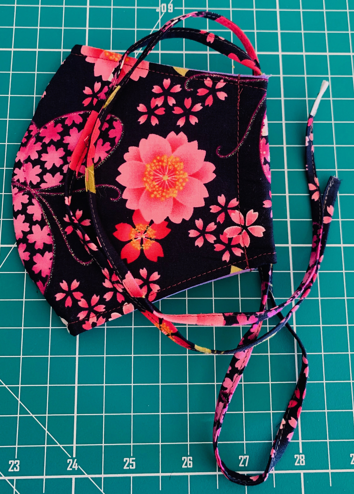

<!-- Assignment 1 by Shane Gimenez
Redone for better grades
Codes are based from w3schools.com and from notes from Dr. Dan lectures. -->

<style>
 
/* to put style for the header */ 
.header {
  overflow: hidden;
  background-image: url(./images/1.jpeg);
  background-size: cover;
  background-position: fixed;
  padding: 10px 10px;
}

.header a {
  float: left;
  color: black;
  text-align: center;
  padding: 12px;
  text-decoration: none;
  font-size: 18px; 
  line-height: 25px;
 
}

.header a.logo {
  font-size: 25px;
  font-weight: bold;
}

.header a:hover {
  background-color: teal;
  color: black;
}

.header-right {
  float: right;
}

h1 {
    text-align: center;
    color: teal;
}

h3 {
    text-align: center;
    font-style: italic;
}

p {
    display: inline-block;
    vertical-align: middle;
}


</style>


<!DOCTYPE html>
<html lang="en">
<head>
    <meta charset="UTF-8">
    <meta name="viewport" content="width=device-width, initial-scale=1.0">
    <meta http-equiv="X-UA-Compatible" content="ie=edge">
    <title>Assignment 1</title>

</head>
        <header>
            <div class="header">
                <a href="#default" class="logo"></a>
                <div class="header-right">
                  <a class="active" href="index.html">Home</a>
                  <a href="products.html">Designs</a>
              </div>
        
        </header>

      

<body>
    <h1>Welcome to Shazey's Design!  </h1>
     <h3> where you can customize your own facemask.</h3> 
<br>
    <div>
     

     <p> Facemask are made with 100% cotton to make it comfortably breathable and with double liner, it is made to block  </p>
    </div>
</body>
</html>